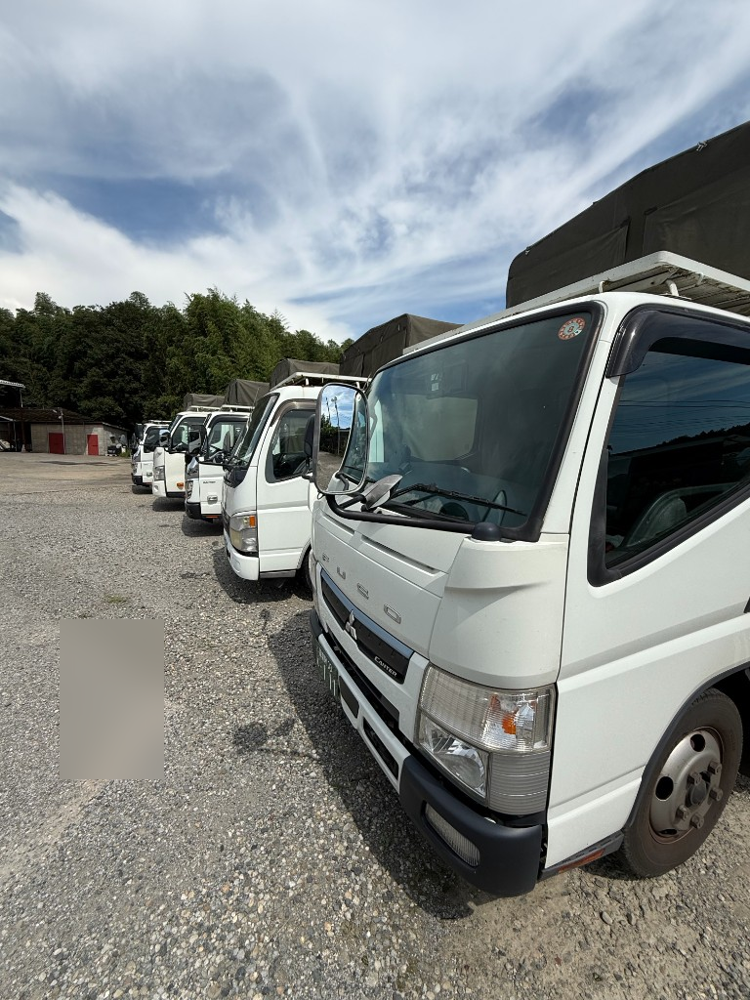
STEP 01
八千代 出発
自社車庫・倉庫からスタート
# 千葉の現場を、確実にお届けする
創業33年。大手建材メーカー向けの夜間コース配送と、商業施設向け防火シャッターメンテの2本柱で、千葉県内の現場を支えています。
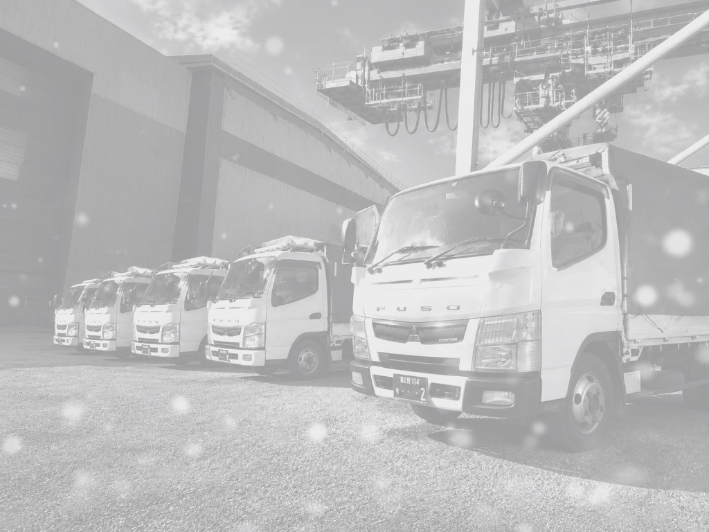
COMPANY
伊藤商事有限会社千葉県市川市／八千代・鎌ヶ谷に拠点。Gマーク認定。
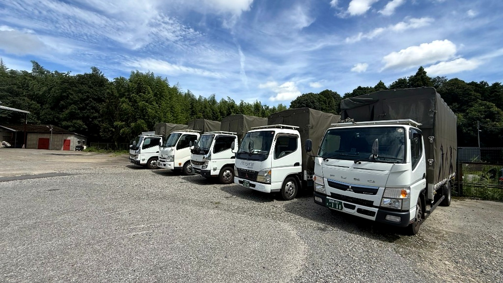
TRANSPORT
アルミ建材のコース配送。夜間〜早朝、手積み・手下ろし、1人作業で現場まで。
大手建材メーカー様向けに、サッシ・長尺物・重量物を千葉県内の固定ルートでお届けします。八千代の車庫を出発し、荷主物流センターで積込後、工務店・現場へ。泊まり運行はなく、地場配送として毎日のリズムで走っています。
FLOW
現場で通じるシンプルな4ステップ。

自社車庫・倉庫からスタート
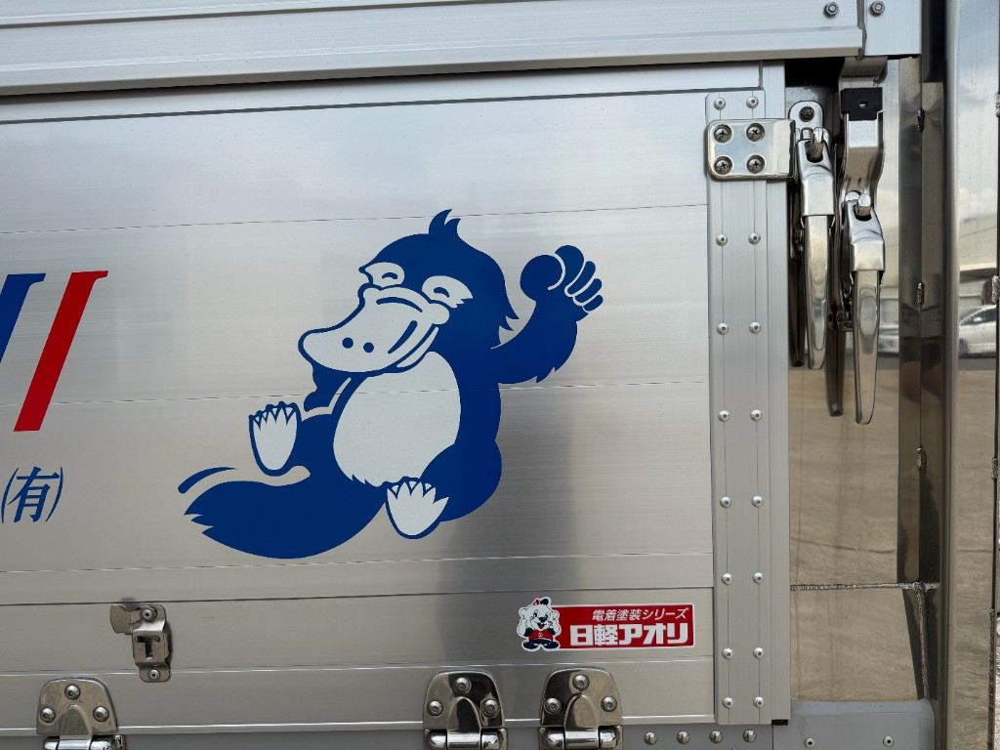
荷主物流センターで積み込み
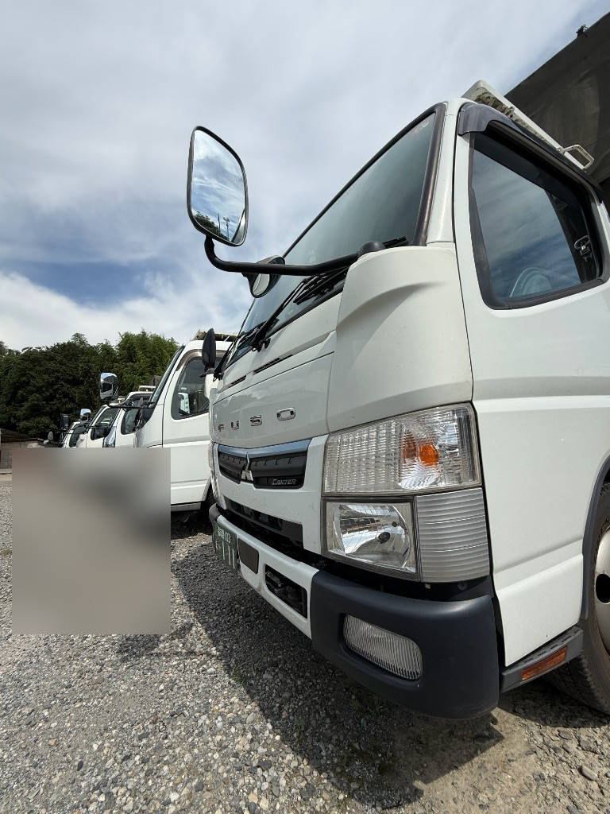
コースに沿って各現場へ
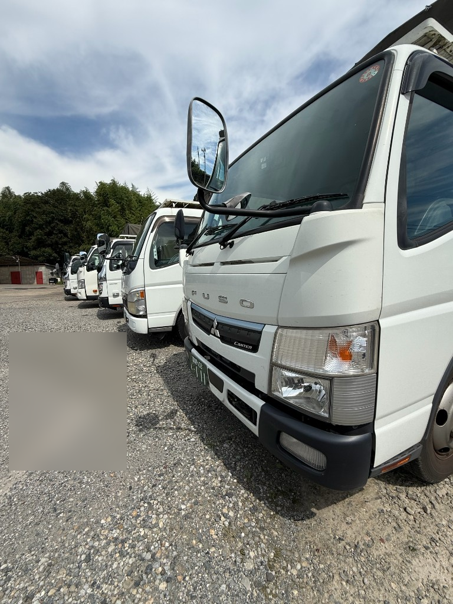
長距離・泊まりなし
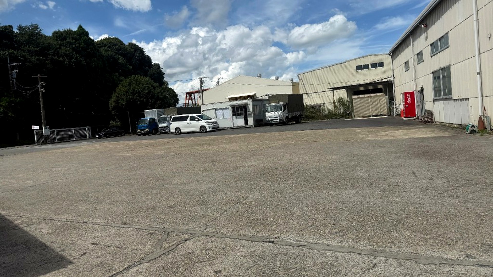
SHUTTER
大手シャッターメーカー契約店として、点検・修理・緊急対応。
ショッピングセンター、商業施設、学校、工場など。防火シャッターの定期点検・検査対応、部品交換・入れ替え、夜間の緊急呼び出しにも対応します。現場経験を積んだスタッフが、安全と開閉の確実性を守ります。
TRUST
関東圏貨物運送許可（関自貨2第1172号）を取得。安全性優良事業所（Gマーク）認定。お客様・荷主様・施設管理者様に安心してお任せいただける体制づくりを続けています。
写真について：本資料はホームページ用写真を流用しています。展示会用・特定お客様向けに差し替えたい場合は、各セクションの画像ファイル名をお知らせいただければ差し替え可能です（推奨サイズ … ヒーロー 1920×1080、ギャラリー 1200×800 程度）。
PHOTO
写真メインで、私たちの日常が伝わるように。
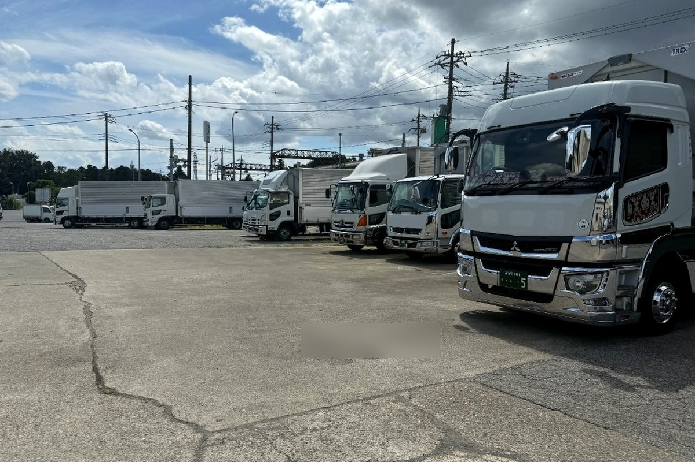
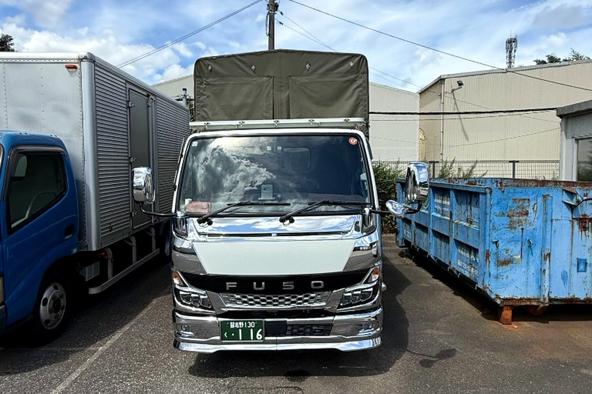
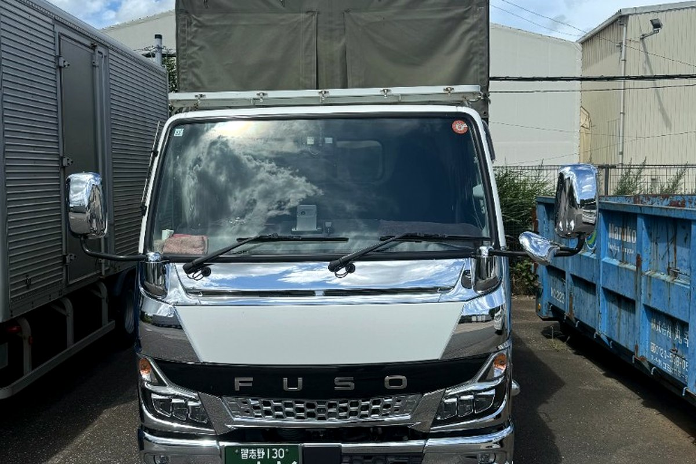
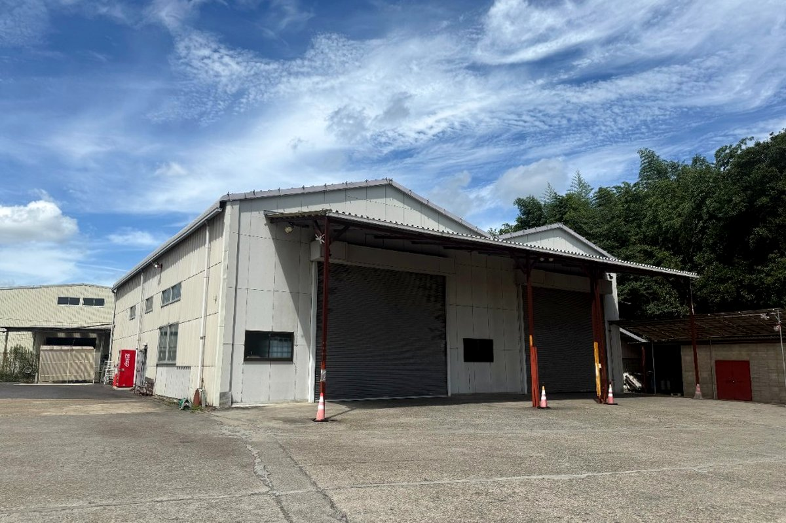
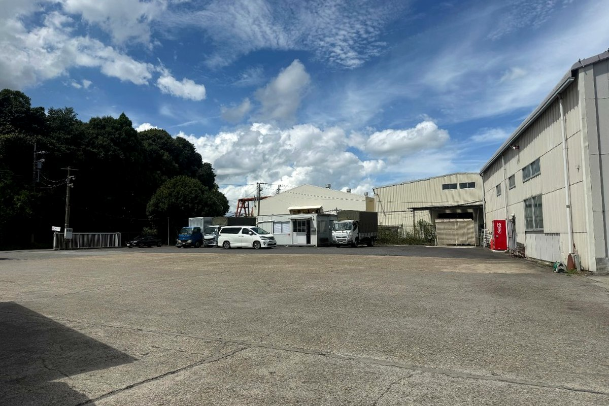
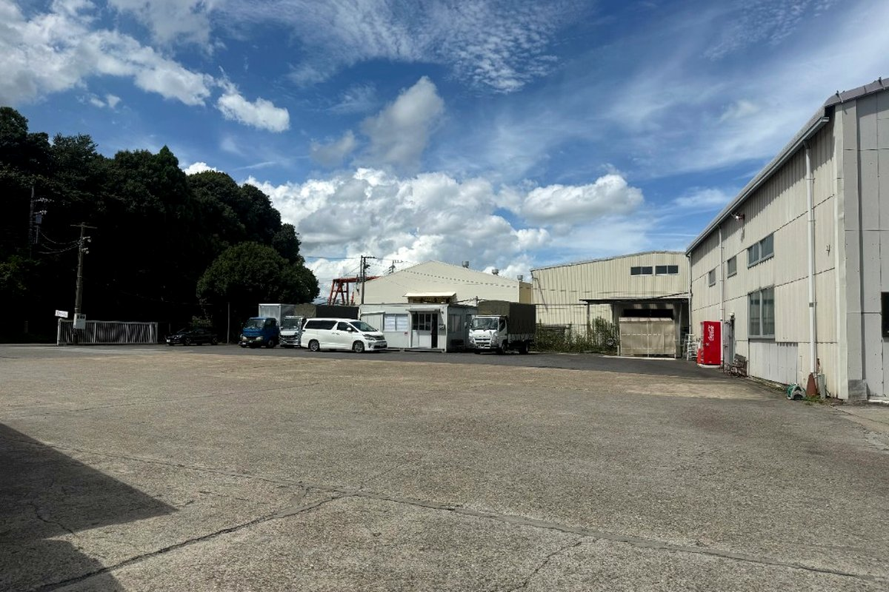
PROFILE
| 会社名 | 伊藤商事有限会社 |
|---|---|
| 代表 | 代表取締役 伊藤 穂 |
| 本社 | 〒272-0814 千葉県市川市高石神36-14 |
| 営業所 | 〒276-0008 千葉県八千代市神久保52-2 TEL 047-489-6380 |
| 事務所 | 〒273-0137 千葉県鎌ヶ谷市道野辺本町2-26-1-601 TEL 047-443-3824 |
| 設立 | 平成5年（1993年）7月 |
| 資本金 | 600万円 |
| 従業員 | 23名 ／ 車両17台（10t×1・4tウイング×6・2t×10） |
| 許認可 | 関東圏貨物運送許可 関自貨2第1172号／Gマーク認定 |
| 事業 | 一般貨物運送（建材コース配送）／防火シャッター点検・修理・メンテナンス |
配送・シャッター・その他のご用件は、お気軽にご連絡ください。
047-443-3824受付 9:00〜17:00（土日祝除く）／Webフォームもご利用いただけます